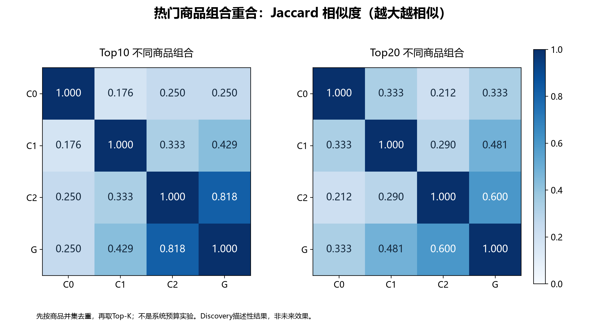
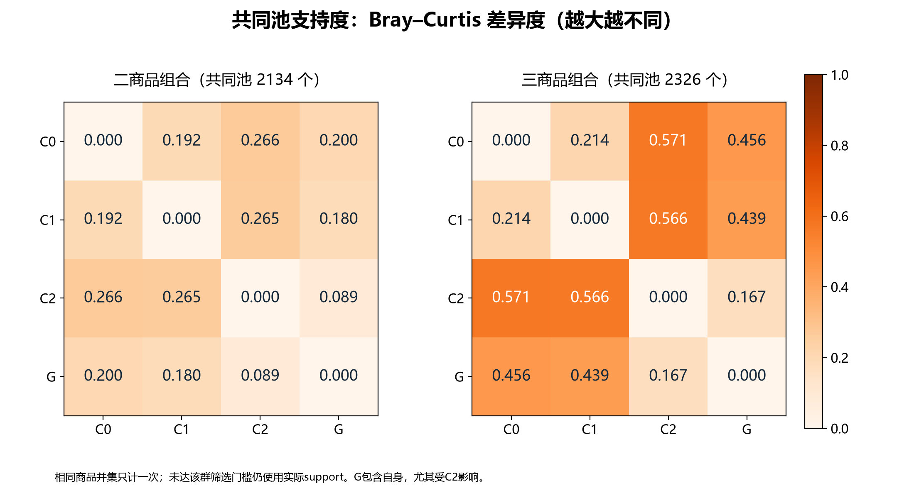
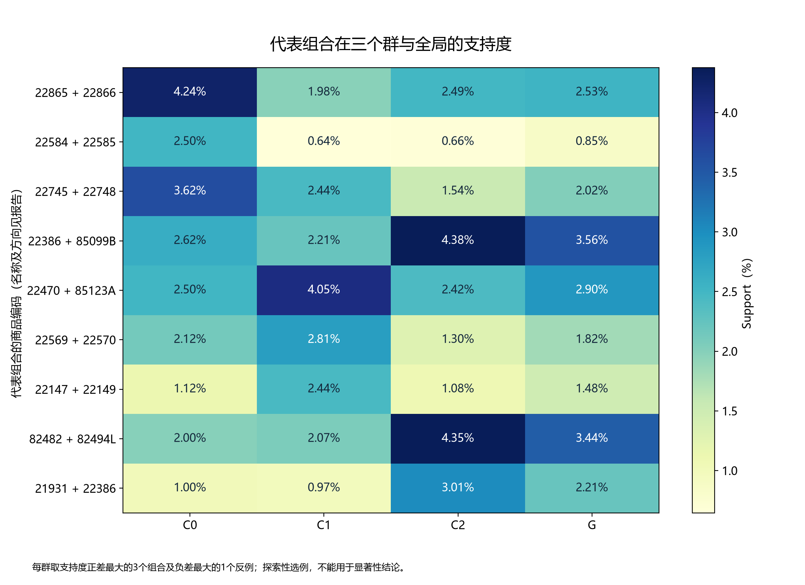

仅Discovery。Top-K先将商品并集相同的合格方向规则合并，再按该组合排名最高的方向规则排序（联合次数、confidence、lift降序，rule_id升序），取K个不同组合。该规则明确处理同次数的并列，不把相同商品集合重复计算。
共同池差异使用全部G/L/R候选的不同商品并集，对各群重新计算的真实support，包含未达各群筛选门槛者。二商品和三商品分别比较；Bray–Curtis=Σ|sᵢ−tᵢ|/Σ(sᵢ+tᵢ)，不对向量归一化为概率。池来源仍影响指标，不涵盖所有未入池商品组合。
Jaccard越大越相似；Bray–Curtis越大越不同。C2占60.5%的Discovery订单，G是群体加权混合；群vsG有自身重叠，不能当独立样本。未做随机距离对照、置信区间或Validation验证，差异大不等于更有用。



每群选择support正差最大的3个不同商品集合，以及负差最大的1个反例；均为该群合格规则，保留代表方向。群外为其他两个真实群的合格Discovery订单。全局排名空白表示未通过完整全局筛选。百分比为展示舍入。
| 群 | 类型 | 前件 | 后件 | 群内篮数 | 群外篮数 | 群内前件次数 | 群外前件次数 | 群内联合次数 | 群外联合次数 | 群内support | 群外support | 群内confidence | 群外confidence | confidence差(百分点) | 全局排名 |
|---|---|---|---|---|---|---|---|---|---|---|---|---|---|---|---|
| C0 | positive | HAND WARMER OWL DESIGN | HAND WARMER SCOTTY DOG DESIGN | 801 | 6720 | 51 | 289 | 34 | 156 | 4.24% | 2.32% | 66.67% | 53.98% | 12.69 | 57.00 |
| C0 | positive | PACK OF 6 BIRDY GIFT TAGS | PACK OF 6 PANNETONE GIFT BOXES | 801 | 6720 | 50 | 261 | 20 | 44 | 2.50% | 0.65% | 40.00% | 16.86% | 23.14 | — |
| C0 | positive | POPPY'S PLAYHOUSE BEDROOM | POPPY'S PLAYHOUSE KITCHEN | 801 | 6720 | 32 | 133 | 29 | 123 | 3.62% | 1.83% | 90.62% | 92.48% | -1.86 | 109.00 |
| C0 | counterexample | JUMBO BAG PINK WITH WHITE SPOTS | JUMBO BAG RED RETROSPOT | 801 | 6720 | 33 | 412 | 21 | 247 | 2.62% | 3.68% | 63.64% | 59.95% | 3.68 | 7.00 |
| C1 | positive | HEART OF WICKER LARGE | WHITE HANGING HEART T-LIGHT HOLDER | 2173 | 5348 | 189 | 335 | 88 | 130 | 4.05% | 2.43% | 46.56% | 38.81% | 7.75 | 23.00 |
| C1 | positive | FELTCRAFT CUSHION RABBIT | FELTCRAFT CUSHION BUTTERFLY | 2173 | 5348 | 78 | 111 | 61 | 76 | 2.81% | 1.42% | 78.21% | 68.47% | 9.74 | 162.00 |
| C1 | positive | FELTCRAFT BUTTERFLY HEARTS | FELTCRAFT 6 FLOWER FRIENDS | 2173 | 5348 | 90 | 124 | 53 | 58 | 2.44% | 1.08% | 58.89% | 46.77% | 12.11 | 376.00 |
| C1 | counterexample | WOODEN PICTURE FRAME WHITE FINISH | WOODEN FRAME ANTIQUE WHITE | 2173 | 5348 | 82 | 296 | 45 | 214 | 2.07% | 4.00% | 54.88% | 72.30% | -17.42 | 9.00 |
| C2 | positive | WOODEN PICTURE FRAME WHITE FINISH | WOODEN FRAME ANTIQUE WHITE | 4547 | 2974 | 276 | 102 | 198 | 61 | 4.35% | 2.05% | 71.74% | 59.80% | 11.94 | 9.00 |
| C2 | positive | JUMBO BAG PINK WITH WHITE SPOTS | JUMBO BAG RED RETROSPOT | 4547 | 2974 | 324 | 121 | 199 | 69 | 4.38% | 2.32% | 61.42% | 57.02% | 4.39 | 7.00 |
| C2 | positive | JUMBO BAG PINK WITH WHITE SPOTS | JUMBO STORAGE BAG SUKI | 4547 | 2974 | 324 | 121 | 137 | 29 | 3.01% | 0.98% | 42.28% | 23.97% | 18.32 | 77.00 |
| C2 | counterexample | FELTCRAFT CUSHION RABBIT | FELTCRAFT CUSHION BUTTERFLY | 4547 | 2974 | 84 | 105 | 59 | 78 | 1.30% | 2.62% | 70.24% | 74.29% | -4.05 | 162.00 |